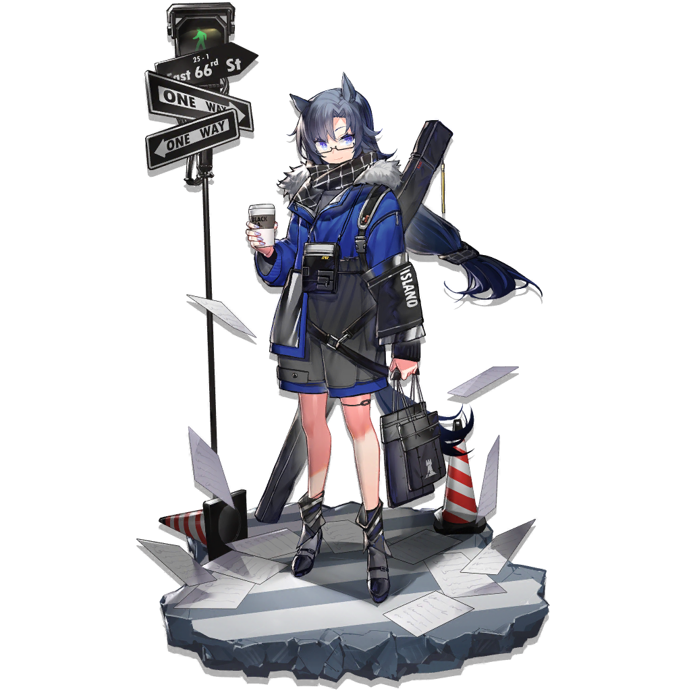
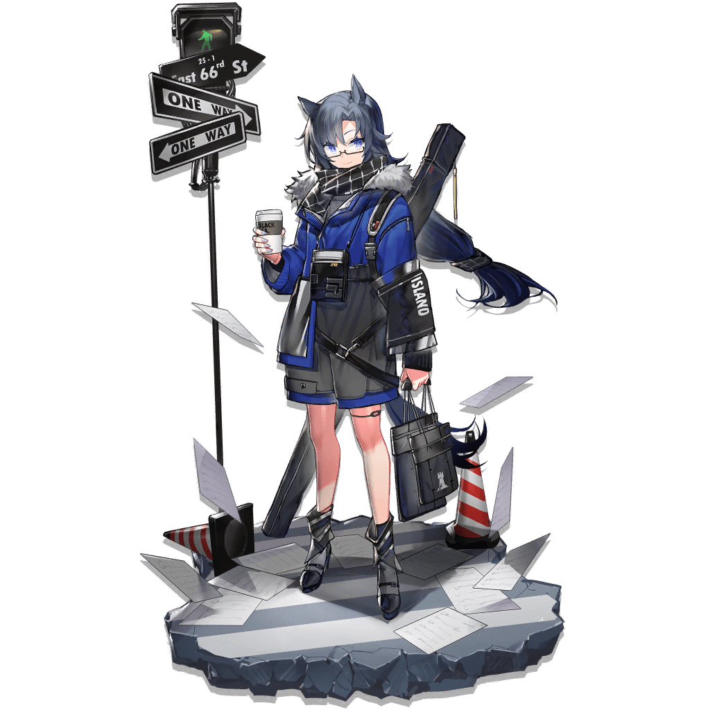
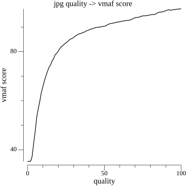
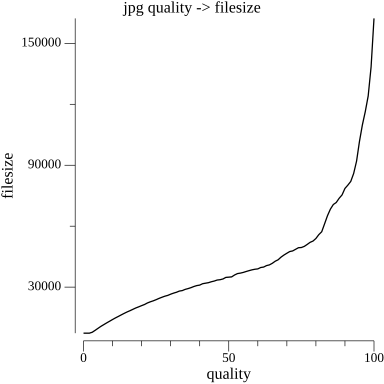
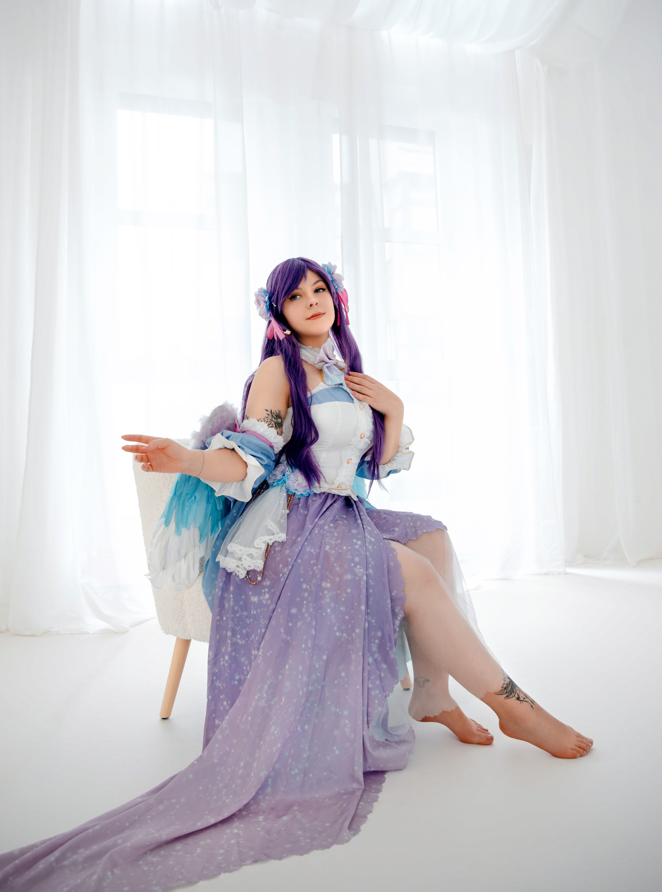
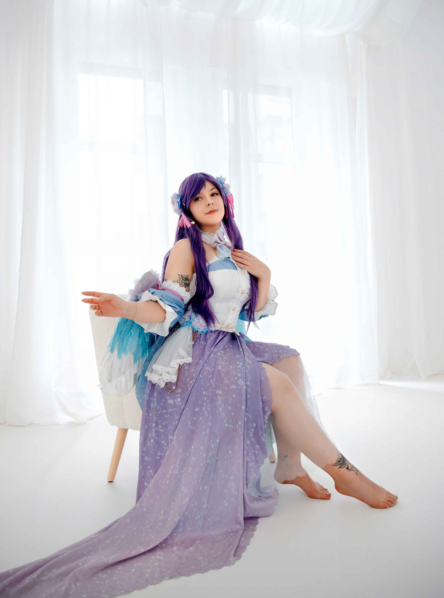
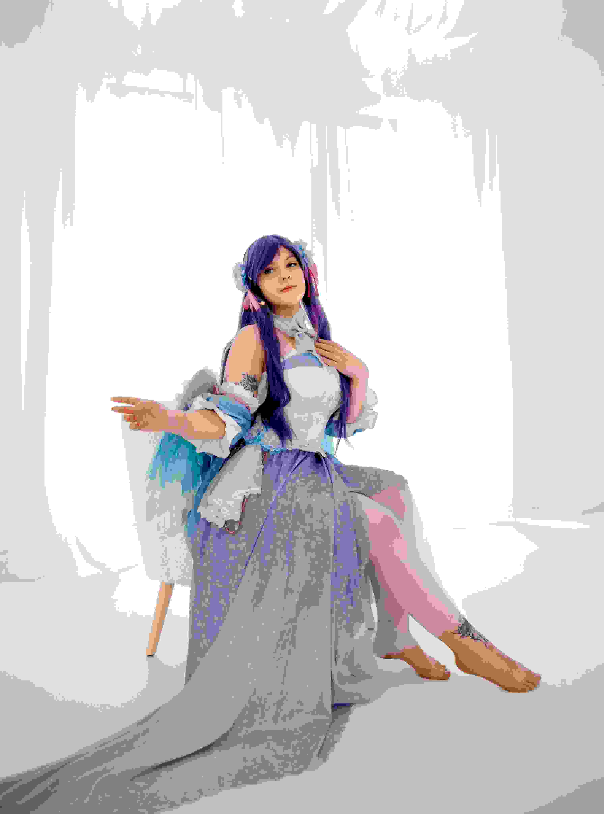
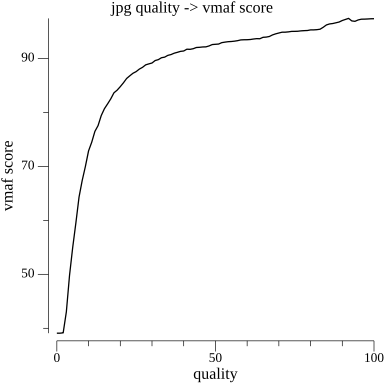
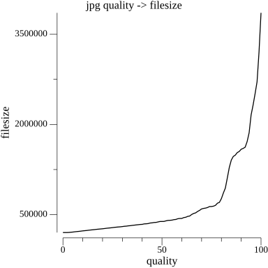

Compressing images
Preamble
This article explains how to reduce the filesize of pictures.
This is not an analysis about the different compression methods or how they compare in their algorithm against each other.
This is a simple comparison of my own experiments and methods on how to reduce filesizes while maintaining quality.
To install the tools mentioned here:
- mat2 - via sudo apt-get install mat2 or via git clone
- jpegoptim - via sudo apt-get install jpegoptim
- pngquant - via sudo apt-get install pngquant
- ffmpeg - via sudo apt-get install ffmpeg
- convert (optional) - via sudo apt-get install imagemagick
Compressing .jpg images
I tried to compress the following image of Megumi Koneko with jpegoptim:
My findings: The metadata of image files can be HUGE. I tried to compress the image with jpegoptim but the filesize wouldn't change much. Then I tried to remove the Metadata of it and it reduced the filesize by an immensely 80%!
The following table shows the filesize of the image in corrolation to what commands were ran:
| Size(bytes) | Size(MB) | Methods used |
|---|
| 8872122 | 8.5M | None (=input file) |
| 8872122 | 8.5M | jpegoptim |
| 1407225 | 1.4M | mat2 |
| 1302516 | 1.3M | mat2 + jpegoptim |
As you can see the optimization alone didn't accomplish much, but if you clean up the metadata most of the filesize is gone!
An important detail here: Using jpegoptim BEFORE the metadata removal doesn't optimize the file at all, only afterwards jpegoptim reduced the filesize by 0.1MB.
An example with a different folder of Megumi Koneko's shooting pictures:
user@fedora:~/temp$ du -sh Rurika_HD_Set/
469M Rurika_HD_Set/
user@fedora:~/temp$ mat2 --inplace Rurika_HD_Set/*
user@fedora:~/temp$ du -sh Rurika_HD_Set/
77M Rurika_HD_Set/
user@fedora:~/temp$ jpegoptim Rurika_HD_Set/*
[...]
user@fedora:~/temp$ du -sh Rurika_HD_Set/
72M Rurika_HD_Set/
I saved nearly 400MB (!!) of my 470MB collection simply by removing metadata.
TL;DR: If you have studio-quality pictures (or shooting pictures) removing the metadata can save a lot more disk space than only using jpegoptim.
Compressing .png images
The same concept as above applies for .png images aswell: Use mat2 to remove metadata and then use pngquant to optimize the image.
As an example here is a character of the mobile game "Arknights" with a transparent background.
To compress the image I used the following command:
pngquant -v --skip-if-larger -s 1 -f --ext .png filename.png
Explanation of the command above: -v makes it verbose, skip-if-larger is self-explanatory, -s 1 means "brute-force the optimization as good as possible", --ext .png sets the output filename to be the same as the input filename and -f forces the output file to overwrite the input file (because they have the same name thanks to --ext .png).
With this the filesize went from 728KB to 189KB (!).
A comparison of both of these files (the first / left file is the unoptimized one, the later the optimized one):


Barely any noticeable difference between the two, while the filesize is more than halfed.
BUT there is another way to minimize filesize: Converting the image to a .jpg file.
You can convert a png to jpg easily with ffmpeg with:
ffmpeg -i "input.png" "output.jpg"
If you convert the above 728KB source image into jpg with the above command the size will go down to 70.6KB, less than half the compressed png size.
The main problem with this approach is the possible quality loss in the image (jpg is a lossy format) and the missing alpha/transparency. If you convert the above image to jpg you will see a black background and not a transparent one, because jpg does not support transparency.
If you now convert a whole folder of images from png to jpg it can save you a lot of disk space, in my case freeing multiple GB of storage.
An example of converting my folder of 36 png images to jpg:
user@debian:~/temp$ du -sh .
13M .
user@debian:~/temp$ ls -l | wc -l
36
user@debian:~/temp$ for i in *.png; do ffmpeg -loglevel error -hide_banner -i "$i" "$i.jpg"; done
user@debian:~/temp$ rm *.png
user@debian:~/temp$ ls -l | wc -l
36
user@debian:~/temp$ du -sh .
4.9M .
As you can see in the output above, I went from 13MB to 4.9MB without much quality lost.
If you decide to accept the possibility of quality loss then this is a great way of saving a lot of storage space.
About jpeg quality settings
The jpeg format has a quality setting that can be between 0 and 100. It controls how good the quality and how high the filesize is, the lower the quality the lower the filesize.
To objectively compare the quality of the different quality settings we can use the vmaf (Video Multi-Method Assessment Fusion) library within ffmpeg. It objectively tells us how similar 2 images or videos are.
An example with a meme image, first is input (jpeg quality 100), then 40 and last 1 quality:
Specifically with meme images the quality doesnt really matter and only adds to a joke most of the time.
The input size, downloaded somewhere from the internet, is 72.1KB. The 40 quality is 30.3KB in size and the 1 quality is only 7.2KB.
The filesize and quality for the different jpeg qualities:


The default for Golang's image package is 75 quality. This comparison graph shows that from around 80 the filesize explodes without much quality being added to it.
If the goal is reduced filesize and the input is something that doesn't need a lot of quality, like a meme, then reducing the quality to 40 could save a lot of space.
Another example, with a 4k image of a photograph (100/40/1 quality setting):



A photograph, if not looked at too closely, is also fine with a very low quality setting.
The input size is 1.4MB, the 40 quality is 330.6KB and the 1 quality is 198KB.
The quality 1 image has a very high filesize compared to the 40 quality one. The meme image above compressed way better. This is due to the resolution of the image.
The filesize and quality graphs for the photograph:


The visual quality of the image reaches over 90% at quality setting 40. The filesize spikes upwards after quality setting 80.
ISO images and 7zip
I found an old game in ISO format. It is 757MB in size. I used 7zip to compress it with various settings and algorithms.
All these flags are in the form of: time 7za a -mmt=1 -mx=9 -ms=on <other_flags> file.7z file.iso
| Flags | size | time | sizeB |
|---|
| //input | 757M | 0s | 793280512 |
| //debian zip -r9 | 596M | 24s | 624238889 |
| -m0=lzma2 -mfb=32 -md=32m | 255M | 1m55s | 266892288 |
| -m0=lzma2 -mfb=32 -md=64m | 219M | 2m3s | 229587549 |
| -m0=lzma2 -mfb=32 -md=128m | 188M | 1m52s | 196299252 |
| -m0=lzma2 -mfb=32 -md=256m | 168M | 1m42s | 175248679 |
| -m0=lzma2 -mfb=64 -md=256m | 168M | 1m50s | 175233526 |
| -m0=lzma2 -mfb=128 -md=256m | 168M | 2m11s | 175238844 |
| -m0=lzma2 -mfb=256 -md=256m | 168M | 2m49s | 175239475 |
| -m0=lzma2 -mfb=256 -md=512m | 137M | 2m45s | 143334478 |
| -m0=lzma2 -mfb=256 -md=1024m | 137M | 2m40s | 142998286 |
| -m0=lzma2 -mfb=256 -md=512m -mmt=4 | 168M | 1m28s | 175723953 |
| -m0=PPMd -mmem=2g | 311M | 3m28s | 325407675 |
| -m0=bzip2 -md=256m -mpass=2 | 609M | 5m45s | 637839116 |
These tests were repeated with a 3.6G ISO file aswell.
| Flags | size | time | sizeB |
|---|
| //input | 3.6G | 0s | 3777429504 |
| //debian zip -r9 | 2.2G | 3m36s | 2306095871 |
| -m0=lzma2 -mfb=32 -md=32m | 1853M | 15m43s | 1942683037 |
| -m0=lzma2 -mfb=32 -md=64m | 1839M | 18m9s | 1928047100 |
| -m0=lzma2 -mfb=32 -md=128m | 1821M | 19m51s | 1908844802 |
| -m0=lzma2 -mfb=32 -md=256m | 1776M | 20m18s | 1861263263 |
| -m0=lzma2 -mfb=64 -md=256m | 1773M | 20m21s | 1858951170 |
| -m0=lzma2 -mfb=128 -md=256m | 1773M | 21m33s | 1858420775 |
| -m0=lzma2 -mfb=256 -md=256m | 1773M | 23m21s | 1858579948 |
| -m0=lzma2 -mfb=256 -md=512m | 1758M | 25m41s | 1843016904 |
| -m0=lzma2 -mfb=256 -md=1024m | 1689M | 26m50s | 1770739093 |
| -m0=lzma2 -mfb=256 -md=512m -mmt=4 | 1788M | 7m56.997s | 1873921573 |
| -m0=PPMd -mmem=2g | 2014M | 18m53s | 2110911339 |
| -m0=bzip2 -md=256m -mpass=2 | 2172M | 22m37s | 2276946270 |
I noticed the following things from these statistics:
- Using multiple cores makes the process faster but the compression worse
- lzma2 is very good for ISOs in both compression and speed
- The dictionary size increases compression but also makes the process slower
This means that the default settings (on windows) of 64/64m is a good tradeoff between time taken and compression ratio.
Converting images
There are many filetypes for images. The most common ones nowadays are: jpg,png,webp,gif
To easily convert images between different formats you can use ffmpeg or imagemagick's convert.
A small feature comparison:
- jpg , lossy format which enables smaller filesizes
- png , lossless format which can limit its colors and support transparency
- gif , lossless and supports transparency and animations
- webp, which enables lossy and lossless images with smaller filesizes as jpg or png
The image formats where tested with a normal image of a girl in .jpg form, a manga page in .jpg and a graphic of an anime-arknights character in .png with transparency.
The transparency will be lost if it gets converted to jpg, which will not be shown below in the comparison but has to be kept in mind.
| type | input | jpegoptim | pngquant | webp | jpg | png | gif | webp(lossless) |
|---|
| photograph | 1.4M | 1.3M | 8.0M | 634K | 1.4M | 12M | 13M | 69M |
| mangapage | 304K | 304K | 626K | 169K | 304K | 614K | 522K | 599K |
| artwork | 729K | 181K | 205K | 98K | 181K | 729K | 241K | 449K |
The above table shows that webp has the lowest filesize of all of them.
The jpg format is 2nd place because it is a lossy format, which is the reason why png is (as a lossless format) in 3rd place. The last place is the GIF format.
The manga page can be further converted / compressed by limiting the available colors because the image is mainly using black and white as colors.
If you use the command pngquant -s 1 10 input.png you can limit the available colors to only 10, which will all be different tones of black/gray. This keeps the quality of the image but lowers the filesize down to 2/3 of the original .jpg image.
To further compress a black and white manga page you can make it monochrome only, which will reduce its size down to 1/3 of the original.
To make an image black and white only you can use the following command:
convert input.png -monochrome output.png
A comparison of the (in order) original jpg image, the converted and optimized png image with only 10 colors and the monochrome png image:
As you can see in the images above, the first 2 are near identical but the last one has the typical "dotted surfaces" to simulate different shades of gray. The file size is, from first to last, 303KB - 230KB - 98,2KB.
One important fact to consider when chosing your prefered image format: Webp is not fully supported on every platform yet.
Microsoft Paint can not edit it and some image viewers can not open it yet either. On the internet many people dislike it because it can not be as easily handled as a png.
There are also vulnerabilities like this one: https://arstechnica.com/security/2023/09/google-quietly-corrects-previously-submitted-disclosure-for-critical-webp-0-day/ , which really make it difficult to like webp in its current state.
About external websites
I recently got an email about this article which mentions a website that has better compression than the tools I mentioned here.
Yes, this website has better compression than pngquant. Pngquant already has the best compression of all the linux commandline tools out there.
But I dislike having to rely on a website for my image compressions. This has multiple reasons:
- The website could save every image I compress (privacy / confidentiality)
- If the website is down or if I am working offline then I would have to find an alternative (availability)
- The website could insert malicious data into my images (Integrity)
I tend to compare this with the webp image format: Ofcourse it has a way better filesize and compression ratio than png or jpg, but I personally do not use it because it has barely any support on modern devices or software.
So even though {webp,the website} is the best at compression, I stick to my little linux commands which do a well enough job for me and are supported {offline,everywhere}.
2026.09.26